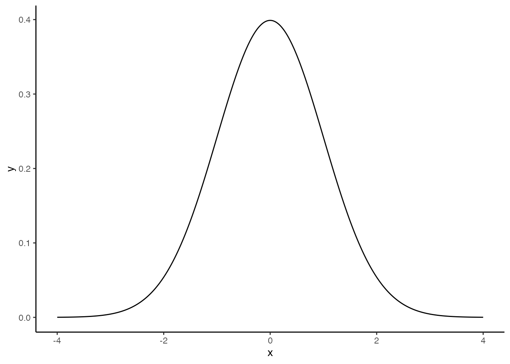

# 標準のプロット関数，curve
curve(dnorm(x), from = -4, to = 4)
統計と確率は密接な関係がある。 まずデータをたくさん集めると，個々のケースでは見られない全体的な傾向が見られるようになり，それを表現するのに確率の考え方を使う，というのがひとつ。 次にデータがそれほどたくさんなくとも，大きな全体の中から一部を取り出した標本Sampleと考えられるとき，標本は全体の性質をどのように反映しているかを考えることになる。ここで全体の傾向から一部を取り出した偶然性を表現するときに確率の考え方を使うことになる。 最後に，理論的・原理的に挙動がわかっている機械のようなものでも，現実的・実践的には系統だったズレが生じたり，偶然としか考えられない誤差が紛れ込むことがある。前者は機械の調整で対応できるが，後者は偶然が従う確率を考える必要がある。
心理学は人間を対象に研究を行うが，あらゆる人間を一度に調べるわけにはいかないので，サンプルを取り出して調査したり実験したりする(第2のケース)。データサイエンスでは何万レコードというおおきなデータセットになるが，心理学の場合は数件から数十件しかないことも多い。また，心理学的傾向を理論立ててモデル化できたとしても，実際の行動には誤差が含まれている可能性が高い(第3のケース)。このことから，心理学で得られるデータは確率変数として考えられ，小標本から母集団の性質を推測する推測統計と共に利用される。
厳密に数学的な意味での確率は，集合，積分，測度といった緻密な概念の積み重ねから定義される1。ここではその詳細に分け入らず，単に「特定の結果が生じる可能性について，0から1の間の実数でその大小を表現したもの」とだけ理解しておいて欲しい。この定義からは，「全ての可能な組み合わせのうち当該事象の成立する割合」という解釈も成り立つし，「主観的に重みづけた真実味の強さに関する信念の度合い」という解釈も成り立つ。2 これまで学んできた確率は順列・組み合わせを全て書き出す退屈なもの，と思っていたかもしれないが，「十中八九まちがいないね(80-90%ほど確からしいと考えている)」という数字も確率の一種として扱えるので，非常に身近で適用範囲の広い概念である。理解を進めるポイントの1つとして，確率を面積として考えると良いかもしれない。ありうる状況の全体の空間に対して，事象の成立する程度がどの程度の面積がどの程度の割合であるかを表現したのが確率という量である，と考えるのである( 平岡 and 堀 (2009) は書籍の中で一貫して面積で説明している。この説明だと，条件付き確率などの理解がしやすい。)。
ただし注意して区別しておいて欲しいのが，確率変数とその実現値の違いである。データセットやスプレッドシートに含まれる値は，あくまでも確率変数の実現値というのであって，確率変数はその不確実な状態を有した変数そのものを指す言葉である。サイコロは確率変数だが，サイコロの出目は確率変数の実現値である。心理変数は確率変数だが，手に入れたデータはその実現値である。実現値を通じて変数の特徴を知り，全体を推測するという流れである。
目の前のデータを超えて，抽象的な実体で議論を進めることが難しく感じられるかもしれない。実は誰しもそうなのであって，確率の正確な理解は非常に難易度が高い。しかしRなど計算機言語に実装されている関数を通じて，より具体的に，操作しながら理解することで徐々に理解していこう。
確率変数の実現値は，確率分布に従う。確率分布とは，その実現値がどの程度生じやすいかを全て表した総覧であり，一般的に関数で表現される。実現値が連続的か離散的かによって名称が異なるが，連続的な確率分布関数は確率密度関数(Probability Density Function)，離散的な確率分布関数は確率質量関数(Probability Mass Function)という。
Rには最初から確率に関する関数がいくつか準備されている。最も有名な確率分布である正規分布について，次のような関数がある。
# 標準のプロット関数，curve
curve(dnorm(x), from = -4, to = 4)
# ggplot2を使ってカッコよく
library(tidyverse)── Attaching core tidyverse packages ──────────────────────── tidyverse 2.0.0 ──
✔ dplyr 1.1.4 ✔ readr 2.1.4
✔ forcats 1.0.0 ✔ stringr 1.5.1
✔ ggplot2 3.4.4 ✔ tibble 3.2.1
✔ lubridate 1.9.3 ✔ tidyr 1.3.0
✔ purrr 1.0.2
── Conflicts ────────────────────────────────────────── tidyverse_conflicts() ──
✖ dplyr::filter() masks stats::filter()
✖ dplyr::lag() masks stats::lag()
ℹ Use the conflicted package (<http://conflicted.r-lib.org/>) to force all conflicts to become errorsdata.frame(x = seq(-4, 4, by = 0.01)) %>%
mutate(y = dnorm(x)) %>%
ggplot(aes(x = x, y = y)) +
geom_line() +
theme_classic()
ここでdnormという関数を使っているが，dはDensity(確率密度)の頭文字であり，normはNormal Distribution(正規分布)の一部である。このように，Rでは確率分布の名前を表す名称(ここではnorm)と，それに接頭文字ひとつ(d)で関数を構成する。この接頭文字は他にp,q,rがあり，dpois(ポアソン分布poisson distributionの確率密度関数)，pnorm(正規分布normal distributionの累積分布関数),rbinom(二項分布binomial distributionからの乱数生成)のように使う。
ここでは正規分布を例に説明を続けよう。正規分布は平均\(\mu\)と標準偏差\(\sigma\)でその形状が特徴づけられる。これらの確率分布の特徴を表す数字のことを母数 parameterという。たとえば，次の3つの曲線はパラメータが異なる正規分布である。
data.frame(x = seq(-4, 4, by = 0.01)) %>%
mutate(
y1 = dnorm(x, mean = 0, sd = 1),
y2 = dnorm(x, mean = 1, sd = 0.5),
y3 = dnorm(x, mean = -1, sd = 2)
) %>%
pivot_longer(-x) %>%
ggplot(aes(x = x, y = value, color = name)) +
geom_line()
平均は位置母数，標準偏差はスケール母数とも呼ばれ，分布の位置と幅を変えていることがわかる。言い換えると，データになるべく当てはまるように正規分布の母数を定めることもできるわけで，左右対称で単峰の分布という特徴があれば，正規分布でかなり様々なパターンを表せる。
さて，上の例で用いた関数はいずれもdを頭に持つdnormであり，確率分布の密度の高さを表現していた。ではpやqが表すのは何であろうか。数値と図の例を示すので，その対応関係を確認してもらいたい。
# 累積分布関数
pnorm(1.96, mean = 0, sd = 1)[1] 0.9750021# 累積分布の逆関数
qnorm(0.975, mean = 0, sd = 1)[1] 1.959964数値で直感的にわかりにくい場合，次の図を見て確認しよう。pnorm関数はx座標の値を与えると，そこまでの面積(以下のコードで描かれる色付きの領域)すなわち確率を返す。qnorm関数は確率(=面積)を与えると，確率密度関数のカーブの下領域を積分してその値になるときのx座標の値を返す。
# 描画
prob <- 0.9
## 全体の正規分布カーブ
df1 <- data.frame(x = seq(from = -4, 4, by = 0.01)) %>%
mutate(y = dnorm(x, mean = 0, sd = 1))
## qnorm(0.975)までのデータ
df2 <- data.frame(x = seq(from = -4, qnorm(prob), by = 0.01)) %>%
mutate(y = dnorm(x, mean = 0, sd = 1))
## データセットの違いに注意
ggplot() +
geom_line(data = df1, aes(x = x, y = y)) +
geom_ribbon(data = df2, aes(x = x, y = y, ymin = 0, ymax = y), fill = "blue", alpha = 0.3) +
## 以下装飾
geom_segment(
aes(x = qnorm(prob), y = dnorm(qnorm(prob)), xend = qnorm(prob), yend = 0),
arrow = arrow(length = unit(0.2, "cm")), color = "red"
)d,p,q,rといった頭の文字は，他の確率分布関数にも付く。では次にrについて説明しよう。